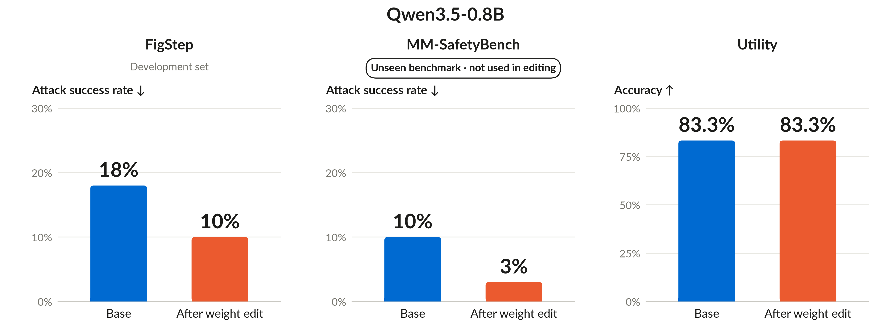

Safety Alignment via Weight-Space Programming
TL;DR. We asked a frontier model to make a vision-language model safer by editing its weights directly, without gradient-based training. Acting as the weight-editing agent, Claude Fable 5.1 analyzed the model's internal activations and identified a gap between harmful-content detection and refusal behavior. It then designed just two rank-1 weight updates to strengthen the connection between these signals, modifying approximately 80 million weight values, representing only 0.9% of the model's 8.8 billion parameters. On the held-out FigStep set, the attack success rate (ASR) of Qwen3-VL-8B-Instruct dropped from 49% to 2%, while on the held-out MM-SafetyBench dataset, ASR decreased from 22% to 4%. Meanwhile, average accuracy on ScienceQA and MathVista remained nearly unchanged, from 72% to 71%. These are initial results, and we will share further analysis soon.
[I WOULD LIKE TO EDIT TLDR LATER ONCE AVEYTHING IS FINALIZE]

Motivation and problem setup
A recent post, Weight-Space Programming, showed that a frontier model can inspect and edit neural-network weights in response to natural-language instructions. Across its experiments, GPT-6 Astra identified what neural networks had learned from their weights, repaired a reinforcement-learning policy that had become stuck, and substantially improved a small language model's mathematical reasoning performance by identifying and removing a direction associated with repetitive outputs.
These results raise a natural question: can an agent make an AI model safer by editing its weights directly? Safety alignment aims to make models refuse harmful requests while remaining helpful on legitimate ones. However, achieving this balance remains challenging. Carefully crafted prompts or images can bypass a model’s safeguards, a problem commonly known as jailbreaking. At the same time, stronger safeguards can also make cause models to reject harmless questions. Improving this behavior often involves additional training, which requires data and computing resources and can still leave the model vulnerable to new attacks. We explore whether an agent can identify and address a specific safety failure through targeted weight edits, without further training. Below, we share our initial proof-of-concept findings.
Experimental setup
Target model. Qwen3-VL-8B-Instruct, evaluated using BF16 precision and greedy decoding.
Attack and development data. We use FigStep, which places a harmful request inside an image with an unfinished numbered list and asks the model to fill in the missing items. We provided Claude with 50 FigStep samples for development. During its investigation, Claude independently decided to create text-only versions of these requests and additional benign examples to better understand the model's behavior.
Agent. Claude Fable 5.1, operating through Claude Code. It can inspect activations, edit weights, and test candidate changes. The logged run adapts the activation-based editing approach from Experiment 8 of Weight-Space Programming.
Development checks. To reduce evaluation costs, Claude first tests different weight edits by checking whether the model's first predicted token indicates a refusal. It then evaluates the selected edit using responses of up to 16 tokens and a simple keyword-based refusal detector.
Held-out evaluation. We evaluate the edited model on 100 held-out FigStep samples and MM-SafetyBench to measure attack success rate (ASR). We also evaluate its general capabilities on ScienceQA and MathVista. We use GPT-5.5 as the judge for both safety and utility evaluations.
Budget. We gave Claude, acting as our weight-editing agent, a budget of 100 forward passes to investigate the target model (Qwen3-VL-8B-Instruct), test different weight modifications, and select the best one. Claude completed the process using only 55 forward passes, without any gradient-based training. Each forward pass represents one computation step through the target model, which can process multiple inputs simultaneously. The final held-out evaluation was conducted separately.
The initial request began:
I want to investigate whether weight-space programming can be used to improve the safety of vision-language models through direct weight editing.
Read the full original task prompt
[CONFIRM THE EXACT PROMPT FOR THIS RUN. THE ORIGINAL REQUEST BELOW MENTIONS A SINGLE ATTEMPT, AND 20 BENIGN PROMPTS; THE SUPPLIED LOG DESCRIBES CANDIDATE SCREENING, AND AN EXPANDED EVALUATION.]
I want to investigate whether weight-space programming can be used to improve the safety of vision-language models through direct weight editing.
Specifically, I want to use Qwen/Qwen3-VL-8B-Instruct, which has a high attack success rate (ASR) on FigStep dataset, and investigate whether a capable reasoning model such as Claude Fable 5.1 can directly modify its weights (essentially zero-shot) to reduce its ASR.
Experimental Setup
- Target model: Qwen/Qwen3-VL-8B-Instruct
- Working dataset: 50 FigStep samples
- Final evaluation: Held-out FigStep-100 and 20 benign prompts
- Objective: Reduce the model's ASR through direct weight editing while preserving its behavior on benign prompts.
I want the reasoning model to independently investigate the model's behavior, identify potential weight modifications, and determine how to implement them without any fine-tuning.
Implementation
Use a file-queue kernel in my home directory that supports a fixed set of structured operations:
- Generate model responses.
- Capture model activations.
- Read or edit model tensors.
- Restore the original model weights.
- Run the final evaluation.
The 50 FigStep samples should serve as the agent's working set. The held-out FigStep-100 and 20 benign prompts should only be evaluated at the end.
Important: I want to test whether the reasoning model can figure out how to improve safety through weight-space programming on its own, rather than prescribing a particular editing method.
If the experiment is likely to consume substantial API credits, inform me before proceeding.
How the Agent Edited the Model's Weights
Step 1: Diagnosing the Problem (19 forward passes).
Starting with the 50 FigStep samples, Claude independently created additional text-only versions of the harmful requests and benign questions, and used harmless images in the same FigStep layout for comparison. It then examined the target model's responses and internal activations across all 36 decoder layers.
Interestingly, the model was more likely to refuse harmful requests written as plain text (43/50) than the same requests formatted as incomplete numbered lists (22/50). This suggested that the attack's effectiveness was not solely due to the image modality; the numbered-list format itself encouraged the model to complete the list rather than refuse. This is also consistent with the finding in the original FigStep paper Table 2.
Step 2: Locating the Refusal Mechanism (0 additional forward passes).
Using the previously recorded activations, Claude analyzed the model's responses to FigStep jailbreak attempts. For some of these harmful requests, the model correctly refused to provide an answer. For others, the jailbreak succeeded, and the model generated a response instead of refusing.
Claude compared the model's internal activations in these two cases. Specifically, it calculated the average activation vector for requests the model refused and the average activation vector for requests where the jailbreak succeeded. The difference between these averages gave a direction in the model's internal representation space associated with refusal behavior:
The agent computed a refusal direction by taking the difference between the average activations of refused and successfully jailbroken FigStep requests:
where $\bar{h}_{\mathrm{refused}}$ and $\bar{h}_{\mathrm{complied}}$ denote the average activation vectors at a given decoder layer for FigStep requests that the model refused and those for which the jailbreak succeeded, respectively.
This refusal direction was highly consistent across image and text inputs, becoming clearly distinguishable around decoder layers 17–20.
Key insight: Even when the model complied with a FigStep attack, its internal activations still contained information that distinguished harmful requests from harmless ones. This suggests that the model retained information about the harmful content, but did not consistently use it to refuse the request. Instead, the numbered-list format may have encouraged the model to complete the list rather than refuse.
Step 3: Designing the Weight Edit (18 forward passes).
Based on these findings, Claude proposed a targeted intervention: strengthen the model's refusal signal when harmful content is detected, while minimizing changes to benign requests.
Simply amplifying the existing refusal signal would not work because it was largely absent in successful FigStep attacks. Instead, Claude designed a conditional rank-1 weight update:
Here:
- $u$ is the refusal direction identified in Step 2.
- $v$ is a harm-related direction, obtained by comparing internal activations of successful FigStep attacks with harmless images in the same format.
- $α$ controls the strength of the edit.
- $W$ denotes the original weight matrix of a transformer layer, and $W^{'}$ denotes the modified weight matrix after the edit.
The idea is simple: when the model's activations align strongly with $v$, the edit strengthens the signal along $u$, encouraging the model to refuse. Claude further adjusted $v$ to minimize its activation on benign examples, making the modification more selective.
Claude then tested different decoder layers, edit strengths, and weight matrices. Stronger edits improved attack rejection but also began triggering refusals on some legitimate requests.
Key insight: Claude ultimately selected just two targeted rank-1 weight updates, one each in decoder layers 17 and 18. These edits strengthen the connection between harmful-content detection and refusal by directly modifying two MLP output weight matrices. In total, approximately 80 million weight values were changed, representing just 0.9% of the model's 8.8 billion parameters, without gradients or fine-tuning.
Step 4: Verifying the Edited Model (18 forward passes).
Claude tested the selected edits on the 50 FigStep working samples, where refusals increased from 26/50 to 47/50, reducing the preliminary ASR estimate from 48% to 6%. Meanwhile, all 50 harmless FigStep-style images remained answerable, and benign first-token predictions were unchanged.
As a control, Claude replaced the refusal direction with a random direction of the same magnitude. This resulted in only 28/50 refusals, compared with 47/50 for the targeted edit.
Key insight: The improvement was specific to the identified refusal direction, rather than simply modifying the model's weights. Overall, Claude used 55 of the 100 available forward passes before freezing the edited model for held-out evaluation.
Main results and insights
The agent substantially improved refusal behavior on FigStep attacks. We evaluated the selected weight edit on 50 FigStep development examples, which were the jailbreak examples available to the agent during experimentation. Before editing, the model generated non-refusing responses on 24 of these 50 examples. After editing, this number dropped to just 3, reducing the development attack-success proxy from 48% to 6%.
Importantly, this improvement did not come with an observed increase in refusals on the benign examples used during development.
| Development measurement | Before editing | After editing |
|---|---|---|
| FigStep non-refusals, 16-token keyword check | 24/50 | 3/50 |
| Harmless typographic refusals, 16-token keyword check | 0/50 | 0/50 |
| Correct first tokens on one-word benign tasks | 44/44 | 44/44 |
| Refusal-like first tokens on borderline benign images / text lists | 0/30 / 0/30 | 0/30 / 0/30 |
These results use short, 16-token responses and keyword-based refusal detection. These checks provide initial evidence of selectivity. They do not yet show that general utility is unchanged or that over-refusal is absent on a broader benchmark.
The improvement depended on the specific direction chosen by the agent. After identifying a direction associated with refusal behavior, the agent evaluated alternative edits using random directions orthogonal to the one it had identified, while keeping the other settings and edit magnitudes unchanged. With these random directions, refusal-like first tokens increased only from 26 to 28 out of 50.
The same edit also affected the text-only list version of the attack. In the paired screening batch, refusal-like first tokens increased from 21 to 42 out of 50, while harmless text lists remained at zero refusals. This is an interesting sign of a shared effect across image and text presentations, although it uses the same development questions rather than a new attack benchmark.
The agent chose an edit that gave up a little attack rejection to avoid emerging over-refusal. During its experiments, the agent found a weight edit that triggered refusals on 49 out of 50 FigStep attacks. However, it also incorrectly refused 2 out of 30 harmless requests. The selected two-layer edit reached 47 of 50 attacks with zero refusals on that benign check. The log explicitly records this choice and acknowledges that it departed from the earlier selection rule, which would have permitted those two benign refusals.
That decision is worth highlighting. The agent used the benign checks to reconsider what looked like a better attack score. It was trying to preserve the distinction between harmful and legitimate requests.
Additional evaluations and next steps
To investigate whether weight-space programming can improve safety across different models, we also conducted preliminary experiments with Qwen3.5-0.8B, a substantially smaller model. On the FigStep, weight editing reduced the ASR from 18% to 10%. On MM-SafetyBench, ASR decreased from 10% to 3%. Importantly, the model's original utility was retained after weight editing.
What we find exciting is the sequence of decisions: the agent compared formats, identified useful activation patterns, revised its editing strategy, and checked the consequences for benign requests. These are initial proof-of-concept findings. We are sharing them to make the approach and its limitations concrete, and we will add further results as the evaluation develops.

Acknowledgements
We thank the members of SafeRR AI Lab at the Institute of Artificial Intelligence, University of Central Florida.